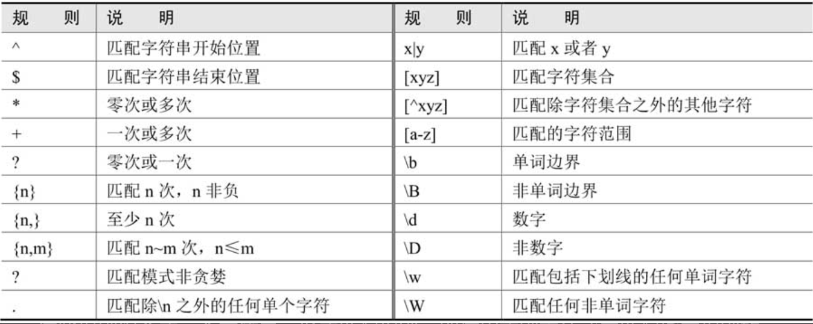
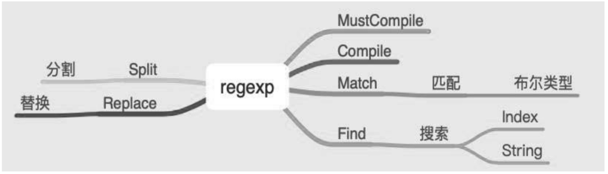

Contents
10.9. regexp¶
关于字符串的操作，除了strings提供的基本操作外，还包括一个与字符串相关的重要操作一一搜索。对字符串按指定规则进行搜索，可以使用正则表达式。
Go标准库使用RE2语法，RE2语法也是Python、C和Perl使用的正则表达式语法。 Go的正则语法和Python类似。
10.9.1. 1.正则表达式主要规则表¶
这些规则组合成一个字符串，形成匹配规则，即使用正则表达式来匹配指定规则的内容。
10.9.2. 2. 使用正则表达式¶
2.1 常用函数¶
MatchString()
FindString()
FindStringIndex()
FindStringSubmatch()
ReplaceAllString()
Compile()
MustCompile()
FindAllString()
2.2 MatchString¶
如果字符串中有子字符串与正则表达式匹配，返回true，否则返回false。
package main
import (
"fmt"
"regexp"
)
func main() {
str := "To be or not to be, that's a question."
// 判断str是否是以To开头
m, err := regexp.MatchString(`^To`, str)
fmt.Println("Match:", m, "Error:", err)
}
2.3 FindString¶
返回第一个匹配的结果。 如果没有匹配成功，返回一个空的字符串。
package main
import (
"fmt"
"regexp"
)
func main() {
str := "Golang expressions example"
r, _ := regexp.Compile("Gola([a-z]+)g")
fmt.Println(r.FindString(str)) // Golang
}
2.4 FindStringIndex¶
FindStringIndex()可以得到匹配的字符串在整体字符串中的索引位置。如果没有匹配的字符串，它回返回nil。
package main
import (
"fmt"
"regexp"
)
func main() {
str := "Golang regular expressions example"
r, err := regexp.Compile(`exp`)
if err != nil {
fmt.Println(err)
}
match := r.FindStringIndex(str)
fmt.Println("Match: ", match, "Error: ", err)
}
2.5 FindStringSubmatch¶
FindStringSubmatch() 除了返回匹配的字符串外，还会返回子表达式的匹配项。 如果没有匹配项，则返回nil。
package main
import (
"fmt"
"regexp"
)
func main() {
str := "Golang regular expressions example"
r, err := regexp.Compile(`p([a-z]+)e`)
match := r.FindStringSubmatch(str)
fmt.Println("Match:", match, " Error:", err)
}
// Match: [15 18] Error: <nil>
2.6 FindAllString¶
FindString方法的All版本，它返回所有匹配的字符串的slice。 如果返回nil代表没有匹配的字符串。
package main
import (
"fmt"
"log"
"regexp"
)
func main() {
str := "Golang regular expressions example"
r, err := regexp.Compile(`p([a-z]+)e`)
if err != nil {
log.Fatalln(err)
}
match := r.FindAllString(str, 2)
fmt.Println("Match: ", match, " Error: ", err)
}
2.7 ReplaceAllString¶
ReplaceAllString 用来替换所有匹配的字符串，返回一个源字符串的拷贝。
package main
import (
"fmt"
"log"
"regexp"
)
func main() {
str := "Golang regular expressions example"
r, err := regexp.Compile(`examp([a-z]+)e`)
if err != nil {
log.Fatalln(err)
}
match := r.ReplaceAllString(str, "tutorial")
fmt.Println("Match: ", match, " Error: ", err)
}
// Match: Golang regular expressions tutorial Error: <nil>
10.9.3. 3.Find系列函数¶
当方法名中有All的时候，它回继续查找非重叠的后续的字符串，返回slice。
当方法名中有String的时候，参数设计字符串，否则时byte slice。
当方法名中有Submatch的时候，还会返回子表达式(capturing group)的匹配项。
综合示例¶
package chapter4
import (
"fmt"
"regexp"
)
func SimpleUsage() {
Slogan := "Go is an open source programming language that makes it easy to build simple, reliable, and efficient software."
reg, _ := regexp.Compile("open source programming language")
if reg.Match([]byte(Slogan)) {
fmt.Println("byte: Match")
}
if reg.MatchString(Slogan) {
fmt.Println("string: Match")
}
}
func SearchUsage() {
Slogan := "Go is an open source programming language that makes it easy to build simple, reliable, and efficient software."
reg, _ := regexp.Compile("open source programming language")
v := reg.Find([]byte(Slogan))
fmt.Println(string(v))
v2 := reg.FindString(Slogan)
fmt.Println(v2)
}
func ReplaceUsage() {
Slogan := "Go is an open source programming language that makes it easy to build simple, reliable, and efficient software."
reg, _ := regexp.Compile(`^Go`)
result := reg.ReplaceAllString(Slogan, "Python")
fmt.Println(result)
}
func SplitUsage() {
Slogan := "Go is an open source programming language that makes it easy to build simple, reliable, and efficient software."
reg, _ := regexp.Compile(`\s|\,|\.`) // 按" "、","、"." 分割
result := reg.Split(Slogan, -1)
fmt.Println(result)
}
10.9.4. 4. 小结¶
regexp库提供了匹配（Match_X）、搜索（Find_X）、替换（Replace_X）和分割（Split）等功能，完成这些任务有以下两个关键点：
（1）使用Compile函数编译正则表达式。
（2）编写符合场景的匹配规则，匹配规则又取决于开发者对正则表达式的熟悉程度。